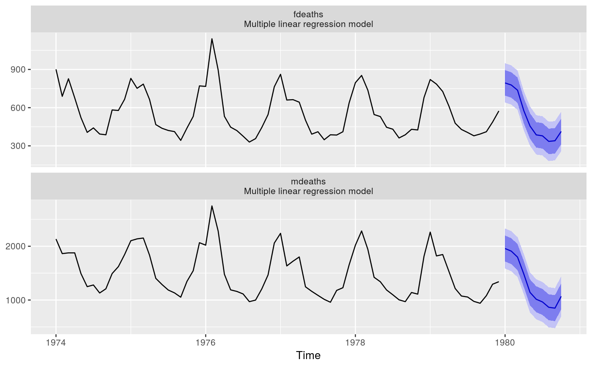

Plots historical data with multivariate forecasts and prediction intervals.
# S3 method for mforecast autoplot(object, PI = TRUE, facets = TRUE, colour = FALSE, ...) # S3 method for mforecast autolayer(object, series = NULL, PI = TRUE, ...) # S3 method for mforecast plot(x, main = paste("Forecasts from", unique(x$method)), xlab = "time", ...)
| object | Multivariate forecast object of class |
|---|---|
| PI | If |
| facets | If TRUE, multiple time series will be faceted. If FALSE, each series will be assigned a colour. |
| colour | If TRUE, the time series will be assigned a colour aesthetic |
| … | additional arguments to each individual |
| series | Matches an unidentified forecast layer with a coloured object on the plot. |
| x | Multivariate forecast object of class |
| main | Main title. Default is the forecast method. For autoplot, specify a vector of titles for each plot. |
| xlab | X-axis label. For autoplot, specify a vector of labels for each plot. |
autoplot will produce an equivalent plot as a ggplot object.
Hyndman and Athanasopoulos (2018) Forecasting: principles and practice, 2nd edition, OTexts: Melbourne, Australia. https://OTexts.org/fpp2/
library(ggplot2) lungDeaths <- cbind(mdeaths, fdeaths) fit <- tslm(lungDeaths ~ trend + season) fcast <- forecast(fit, h=10) plot(fcast)autoplot(fcast)carPower <- as.matrix(mtcars[,c("qsec","hp")]) carmpg <- mtcars[,"mpg"] fit <- lm(carPower ~ carmpg) fcast <- forecast(fit, newdata=data.frame(carmpg=30)) plot(fcast, xlab="Year")